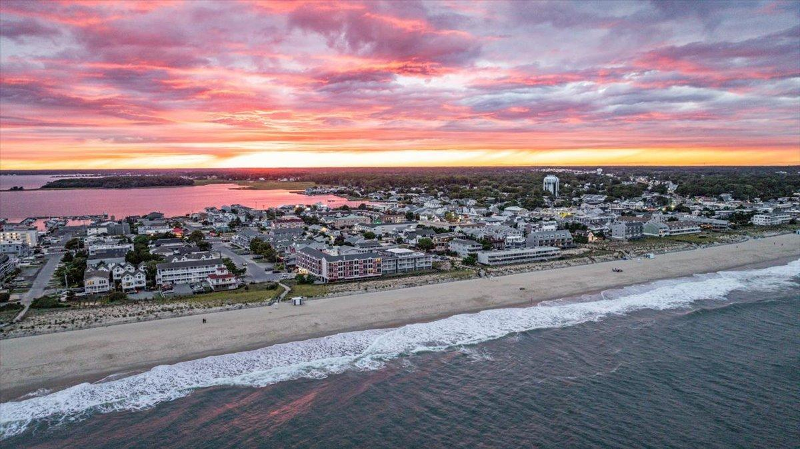
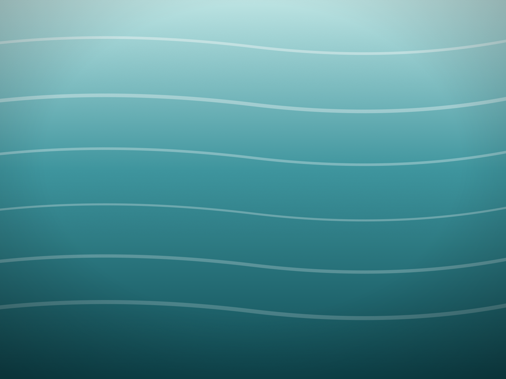
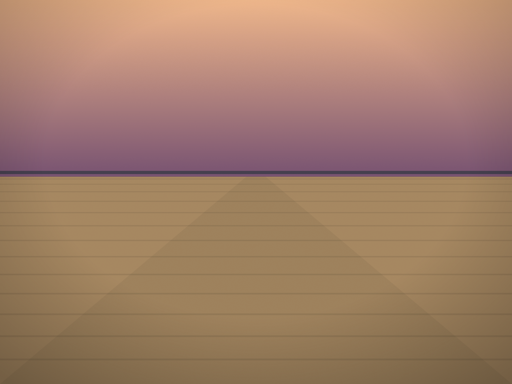
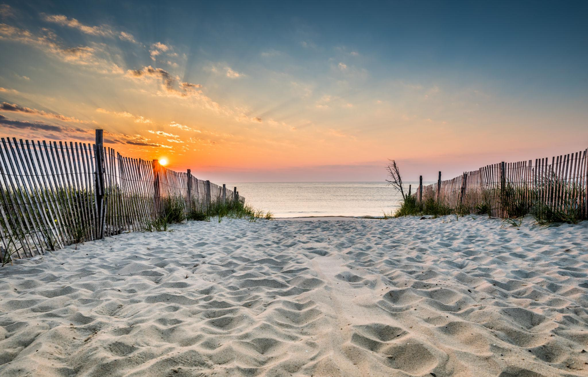

The Best Sunset Spots on the Coast
Five real spots, one per town — the golden-hour recommendation we'd actually give a friend, not a highlight reel.
Not a ranked list. Five different reasons to be there at the right time.
Every one of these already lives in our own town guides — this is just the golden-hour version, pulled together in one place. Each town has its own light, its own crowd, and its own reason to show up right before the sun goes down.
Timing it
Sunset time shifts through the season, so check a weather or tide app for the actual time on the day you're going — then plan to be in place twenty to thirty minutes early. The best light usually happens before the sun is actually gone, not after.
One per town, straight from our own guides.

The Fishing Pier, Cape Henlopen Drive
Go right as the evening ferry comes in — you'll have the view of the harbor mouth mostly to yourself while everyone else is still parking downtown.

Observation Tower 7
Free, open most of the year, and the view stretches from the Lewes ferry terminal to the open Atlantic in one turn.

The Bay Side at Rodney Street
Quiet water, no boardwalk, just the light doing all the work — Dewey at its best, and a fifteen-minute walk from the ocean-side sunrise crowd.
The Lighthouse, Looking North
Golden hour at the lighthouse, looking back up the coastline toward Bethany — fewer people photograph this stretch than almost anywhere else on the Delaware shore.

The Boardwalk From the Inlet, North
Walk it at golden hour, right as the Ferris wheel lights come on and the crowd shifts from beach chairs to fries baskets.

More local guides

Gordon's Pond to the Water
The boardwalk everyone takes, and the quiet trail past it that most people never find.
Lewes Canal to the Harbor
Park once and walk the whole thing — the same evening-ferry pier that made this list.

Surf Fishing Delaware
Dawn and dusk are prime time on the water too — read the beach before you go.